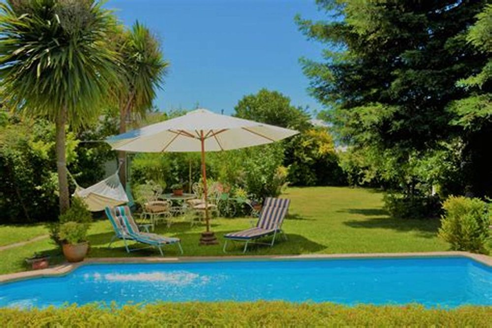
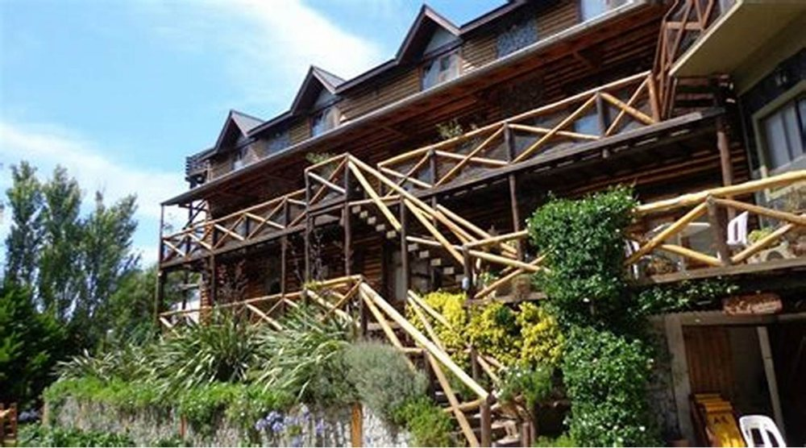
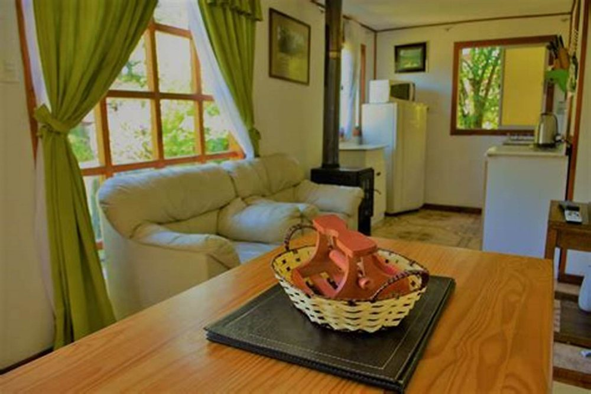

Cabañas · Villarrica
Quedarse
toda la semana
Casi todas las cabañas se venden para el fin de semana largo. Hay otro cliente, que paga mejor y molesta menos: el que se queda siete días seguidos porque puede trabajar desde acá. A ése nadie le habla.
- reseñas en Google
- 77
- teléfono
- +56 45 241 5345
Esta página va oscureciendo a medida que se baja: empieza a las ocho de la mañana y termina a las once de la noche.
El huésped del que nadie habla
Una semana
trabajando desde acá
La pregunta es corta y no la contesta ninguna cabaña de la zona: ¿puedo quedarme la semana y trabajar? Quien la hace ya decidió venir; sólo necesita saber si va a poder cumplir. Y si nadie le responde, arrienda en otra parte.
-
¿Hay una mesa de verdad?
falta: confirmar
No la mesa de comer con el mantel puesto: una superficie donde quepa un notebook y un cuaderno y que se pueda dejar armada toda la semana. Es la primera pregunta y la que más veces se contesta mal.
-
¿La silla aguanta ocho horas?
falta: confirmar
Una silla de terraza está bien para almorzar y es un suplicio para trabajar. Si hay una silla con respaldo firme, eso se dice — y si no la hay, también.
-
¿Hay enchufes cerca de esa mesa?
falta: cuántos y dónde
Dos enchufes al lado de la mesa valen más que diez repartidos por la cabaña. Es un detalle de un minuto que decide una reserva de siete noches.
-
¿Cómo es la señal y el internet?
falta: y no lo voy a inventar
Este dato no lo puedo poner yo por ninguna razón. Publicar una velocidad que no es termina en una discusión el primer día y en una reseña de una estrella el último. Lo que sí conviene: medirlo una vez, escribir el número real, y decir además qué compañía tiene señal acá.
-
¿Se puede hacer una videollamada sin ruido?
falta: confirmar
Si las cabañas están pegadas o pasa gente por fuera, hay que decirlo. Y si hay un rincón tranquilo, decirlo vale doble.
-
¿Hay tarifa por semana o por mes?
falta: la tarifa
Siete noches seguidas fuera de temporada valen más que dos fines de semana, y el que se queda un mes es el mejor cliente que puede tener una cabaña. Una tarifa escrita para esa estadía atrae exactamente a ese huésped.
Seis respuestas cortas. Ninguna cuesta plata y las seis juntas abren un mercado —el que trabaja a distancia— que en Villarrica todavía no atiende nadie por escrito.
La foto que contesta antes de la pregunta
La terraza cubierta: mesa, enchufe y techo
Quien se queda una semana no trabaja en la cama: trabaja en una mesa, con luz y con dónde enchufar. Esta terraza tiene las tres cosas y además techo, que en Villarrica no es un detalle. Publicar esta foto con esas palabras hace más que cualquier promoción: contesta la pregunta que el que arrienda largo se hace y no se atreve a escribir por WhatsApp.
El día completo, hora por hora
La mañana
A las ocho la cabaña recibe la primera luz y ésa es la hora en que se decide cómo va a ser el día: si hay dónde tomar desayuno mirando afuera, o si hay que resolverlo de pie en la cocina.
- Por dónde entra el sol en la mañana
- falta
- Si hay dónde desayunar mirando afuera
- falta
- Dónde se compra pan temprano
- falta
El mediodía
La hora que separa una cabaña que sirve para quedarse de una que sirve para dormir. Si se puede cocinar bien, la semana completa es viable; si no, son siete almuerzos afuera y la cuenta cambia.
- Qué hay en la cocina de verdad
- falta: la lista corta
- Dónde se hace la compra grande
- falta
- Si hay parrilla y si se puede usar
- falta
La tarde
Se cierra el computador y empieza la parte por la que uno viene. En invierno a esta hora ya está oscureciendo, y lo que decide la tarde es si la cabaña es un lugar donde da gusto quedarse.
- Cómo se calienta la cabaña
- falta: estufa a leña o eléctrica
- Si hay terraza y hasta qué mes se usa
- falta
- Qué queda cerca para caminar
- falta
La noche
Lo que nadie publica y todos evalúan: qué tan silencioso es de verdad. Un huésped que trabaja y se queda una semana necesita dormir bien las siete noches, no cinco.
- Qué se escucha de noche
- falta: decirlo honestamente
- Si las cabañas están pegadas
- falta
- Si hay luz afuera para llegar
- falta
Cuatro horas del día, doce datos. Ninguna cabaña de Villarrica tiene esto escrito, y es lo único que un huésped de siete noches lee completo antes de reservar.
A las once de la noche el lago sigue ahí
Y usted ya no está manejando de vuelta
Para reservar, hoy se llama
+56 45 241 5345
Es el número publicado en su ficha de Google.
Lo que sí es de ellos
Las fotos con pie son suyas, de su propia ficha y su Facebook. Los fondos de lago con niebla no lo son y están declarados en imagenes/FUENTES.txt.
falta: la misma cabaña a las 08, las 13, las 18 y las 23 — cuatro fotos desde el mismo punto, en un solo día


